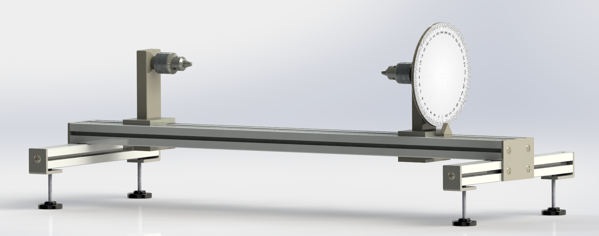
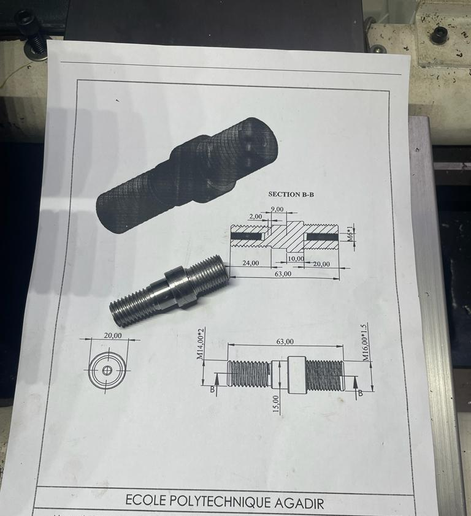
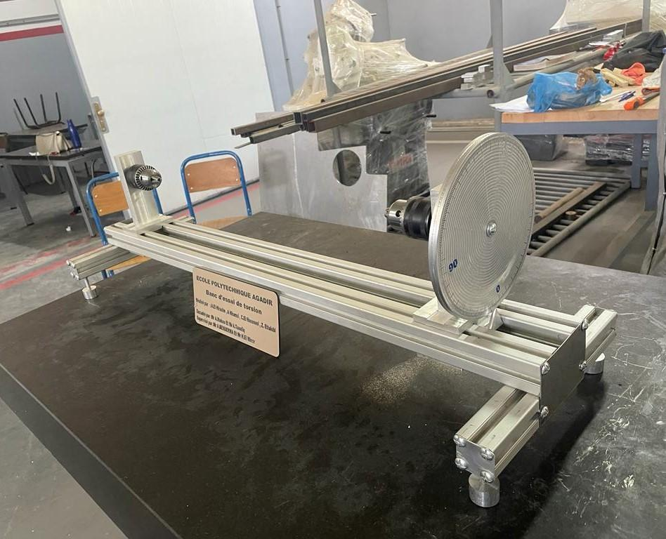

ORGANISATION
ENSA Mechanical Lab
Designed, reverse-engineered, and manufactured a fully functional educational torsion rig from scratch at ENSA Mechanical Laboratory — replacing the measurement system to achieve an 80% reduction in setup time.
The ENSA Mechanical Laboratory needed an educational torsion test bench to demonstrate torsional stress and shear modulus principles to students. No existing technical drawings were available — the design had to be reconstructed from the original physical device through systematic reverse engineering before manufacturing could begin.
The original bench was decomposed using functional analysis: each subassembly was identified by its mechanical role — torque input, specimen clamping, angular measurement — before any dimensions were taken. This systematic decomposition avoided the common trap of replicating geometric details without understanding their function, and opened the door to targeted improvements.
All components were measured and a full 3D model was built in SolidWorks, capturing the kinematic chain from the loading handle through the specimen to the fixed end constraint.

The original design used an external dial comparator to measure angular deflection — a fragile, time-consuming instrument to set up and align correctly for each test. The redesigned measurement system replaced it with a graduated pulley directly mounted on the specimen shaft.
This change eliminated the alignment procedure entirely. The pulley reads angular displacement directly, is permanently integrated into the assembly, and requires no calibration between tests. The result was an 80% reduction in setup time, making the bench practical for teaching sessions where multiple student groups need to run tests back to back.
Parts were manufactured in-house using both conventional and CNC machining equipment. Aluminium was selected as the primary structural material for its machinability, weight, and sufficient strength for educational load levels. Tolerances were specified to ensure smooth rotation at the specimen interfaces without play that would introduce measurement error.

The full assembly was completed and functionally validated within the internship period, with the bench handed over operational and ready for student use.

This project established a working pattern I've used on every hardware project since: understand the function before touching the geometry. Reverse engineering the bench forced a deep read of what each part actually needed to do, which is what made the measurement system improvement possible. It would have been invisible had I simply copied the original dimensions.